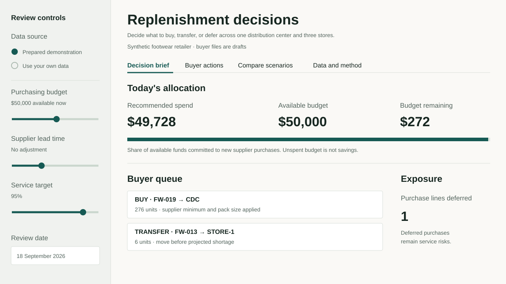

Where should the next dollar of stock go?
A buyer has a $50,000 purchasing limit, long supplier lead times, and competing store shortages. This system recommends what to buy, move from the distribution center, or defer—and makes the trade-off inspectable.
Make the allocation, then show the reason.
The buyer sees a short action list grounded in stock records, forecast evidence, supplier rules, and cash. A recommendation shows quantity, arrival, cost, and the reason it won or lost funding.
Three distinct decisions from one network view. Deferrals remain visible as shortage exposure, not accounting savings.
Reconcile the stock
Check daily snapshots against receipts, dispatches, and sales. Separate stockout-censored days from true zero demand.
Allocate scarce supply
Move available CDC stock to urgent stores, then buy valid supplier packs within the remaining cash limit.
Measure the consequence
Replay the policy against a days-of-supply baseline and report service, lost units, purchase commitments, and inventory value.
A better service result costs a little more.
With a $25,000 monthly cap in the six-month synthetic replay, the proposed policy serves more demand. The base and supplier-delay scenarios tie the baseline.
142 fewer lost units, with $216 more purchase commitments, $140.25 more estimated transfer cost, and $151.39 higher average inventory value over 183 days.
Tight budget · unit fill rate
1 April–30 September 2026 · synthetic demand · identical opening conditionsInspect the working decision.
Change the budget, supplier timing, or service target. Trace a SKU and download draft Excel or CSV buyer actions. Import templates support your own data.

Inspect the assumptions and code.
The repository includes the input contract, movement reconciliation SQL, rolling-origin forecast comparison, deterministic cash allocation, holdout replay, automated tests, and buyer exports.
What this evidence means
The allocator is an explainable heuristic, not a global mathematical optimum. Safety stock uses an estimated service target; achieved fill rate is measured in replay. Average inventory value measures inventory capital, not full working capital.
No simulated result is represented as realized employer savings.